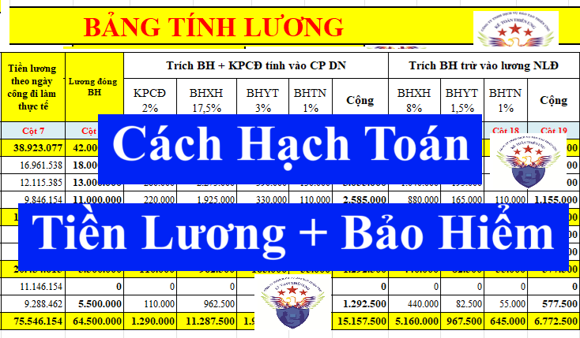
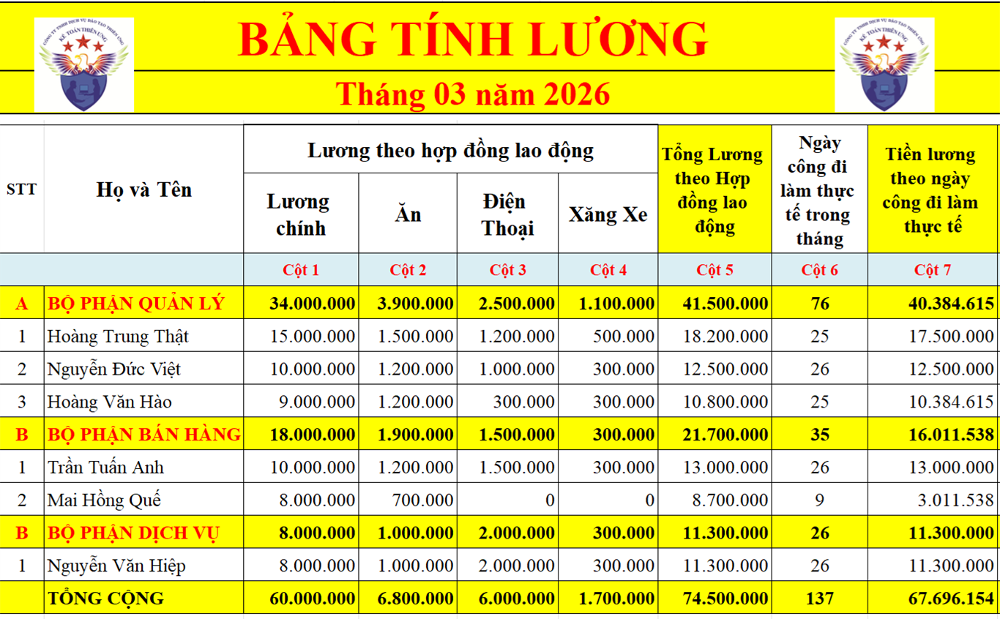
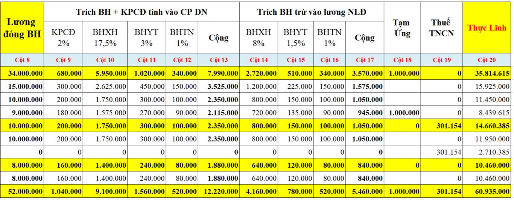

Cách hạch toán tiền lương và các khoản trích theo lương: Bảo hiểm xã hội, kinh phí công đoàn; Hạch toán tạm ứng lương, hạch toán thuế TNCN của nhân viên, cách hạch toán tiền chế độ thai sản... theo Thông tư 99/2025/TT-BTC và Thông tư 133/2016/TT-BTC mới nhất.
Các tài khoản sẽ sử dụng khi hạch toán tiền lương và các khoản trích theo lương:
+ Tài khoản kế toán 334 - Phải trả người lao động: Dùng để phản ánh các khoản phải trả và tình hình thanh toán các khoản phải trả cho người lao động của doanh nghiệp về tiền lương, tiền công, tiền thưởng, bảo hiểm xã hội và các khoản phải trả khác thuộc về thu nhập của người lao động.
+ Tài khoản 3382 - Kinh phí công đoàn:

Phản ánh tình hình trích và thanh toán kinh phí công đoàn ở đơn vị.
+ Tài khoản 3383 - Bảo hiểm xã hội:
Phản ánh tình hình trích và thanh toán bảo hiểm xã hội ở đơn vị.
+ Tài khoản 3384 - Bảo hiểm y tế:
Phản ánh tình hình trích và thanh toán bảo hiểm y tế ở đơn vị.
+ Tài khoản 3386 - Bảo hiểm thất nghiệp (DN áp dụng thông tư 133 thì sẽ sử dụng tài khoản 3385)
Phản ánh tình hình trích và thanh toán bảo hiểm thất nghiệp ở đơn vị.
Vì chi phí tiền lương phải trả cho NLĐ thuộc bộ phận nào thì hạch toán vào tài khoản chi phí của bộ phận đó. Nên khi hạch toán chi phí tiền lương sẽ sử dụng đến các tài khoản chi phí sau:
+ Bộ phận Bán hàng: TK 641 (Thông tư 133 sử dụng TK 6421)
+ Bộ phận Quản lý DN: TK 642 (Thông tư 133 sử dụng TK 6422)
+ Bộ phận sản xuất:
+/ TK 622: CP nhân công trực tiếp (Để hạch toán tiền lương, tiền công và các khoản khác phải trả cho nhân công trực tiếp sản xuất sản phẩm, thực hiện dịch vụ)
+/ TK 623: CP sử dụng máy thi công (để hạch toán CP tiền lương, tiền công và các khoản khác phải trả cho công nhân điều khiển xe, máy, phục vụ xe, máy)
+/ TK 627: CP sản xuất chung (để hạch toán Chi phí lương, BH nhân viên quản lý phân xưởng, bộ phận, đội)
(Thông tư 133 bộ phận sản xuất sử dụng TK 154)
Chi tiết các bạn xem tại đây nhé: Chi phí tiền lương hợp lý
-------------------------------------------------------------------------------
1. Hạch toán chi phí tiền lương:
Căn cứ vào bảng tính lương, phiếu tính lương để hạch toán chi phí tiền lương cho từng bộ phận mà NLĐ đang làm việc:| Đối với DN hạch toán theo Thông tư 99/2025/TT-BTC | Đối với DN hạch toán theo Thông tư 133/2016/TT-BTC |
|
Nợ TK 641 – Tiền lương của bộ phận bán hàng Nợ TK 642 – Tiền lương của bộ phận quản lý doanh nghiệp Nợ TK 622 – Tiền lương của nhân công trực tiếp SX sản phẩm, thực hiện dịch vụ. Nợ TK 623 - Tiền lương cho công nhân điều khiển xe, máy, phục vụ xe, máy Nợ TK 627 - Tiền lương của nhân viên của phân xưởng; quản lý phân xưởng, bộ phận, tổ, đội sản xuất
Có TK 334: Tổng số tiền lương thực tế phải trả trong tháng
|
Nợ TK 6421 – Tiền lương của bộ phận bán hàng Nợ TK 6422 – Tiền lương của bộ phận quản lý doanh nghiệp Nợ TK 514 - Tiền lương của bộ phận sản xuất, dịch vụ...
Có TK 334: Tổng số tiền lương thực tế phải trả trong tháng
|
--------------------------------------------------------------------------
2. Hạch toán các khoản trích theo lương:
Các khoản trích theo lương gồm có:
* Bảo hiểm bắt buộc:
| Loại Bảo Hiểm | ||||
| Đối tượng | Bảo Hiểm Xã Hội | Bảo Hiểm Y Tế | Bảo Hiểm Thất Nghiệp | Tổng Cộng các khoản bảo hiểm |
| Doanh nghiệp đóng | 17,5% | 3% | 1% | 21,5% |
| Người lao động đóng | 8% | 1,5% | 1% | 10,5% |
| Tổng cộng | 25,5% | 4,5% | 2% | 32% |
Ngoài khoản tiền bảo hiểm bắt buộc nêu trên thì doanh nghiệp còn phải đóng kinh phí công đoàn = 2% quỹ tiền lương làm căn cứ đóng BHXH cho người lao động về liên đoàn lao động quận/huyện
(Người lao động không phải đóng kinh phí công đoàn. Nếu NLĐ tham gia vào tổ chức công đoàn của cơ sở thì phải đóng đoàn phí công đoàn)
(Người lao động không phải đóng kinh phí công đoàn. Nếu NLĐ tham gia vào tổ chức công đoàn của cơ sở thì phải đóng đoàn phí công đoàn)
Ví dụ 1: Công ty Kế Toán Diệu Tâm ký hợp đồng lao động 36 tháng với bà Trần Thị Trà My, Công việc: Kế Toán (Thuộc bộ phận quản lý)
=> Vì HĐLĐ có thời hạn là 36 tháng => Thuộc đối tượng phải tham gia bảo hiểm bắt buộc => Đã tham gia bảo hiểm bắt buộc với mức tiền lương là 10.000.000đ
thì hàng tháng công ty Diệu Tâm sẽ phải trích các khoản bảo hiểm theo lương như sau:
* Trích trừ vào tiền lương của NLĐ phần tỷ lệ 10,5% mà NLĐ phải đóng: = 10.000.000đ x 10,5% = 1.050.000đ
Chi tiết từng loại bảo hiểm như sau:
| Loại bảo hiểm: | BHXH | BHYT | BHTN | Tổng cộng |
| Tỷ lệ % người sử dụng lao động phải trích đóng | 8% | 1,5% | 1% | 10,5% |
|
Số tiền phải trích trừ vào lương (= Lương tham gia bảo hiểm X tỷ lệ %) |
= 10.000.000đ x 8% = 800.000đ | = 10.000.000đ x 1,5% = 150.000đ | = 10.000.000đ x 1% = 100.000đ |
= 10.000.000đ x 10,5% = 1.050.000đ |
* Trích bảo hiểm tính vào chi phí của doanh nghiệp phần tỷ lệ 21.5% mà người sử dụng lao động phải đóng: = 10.000.000đ x 21,5% = 2.150.000đ
Chi tiết từng loại bảo hiểm như sau:
| Loại bảo hiểm: | BHXH | BHYT | BHTN | Tổng cộng |
| Tỷ lệ % người lao động phải trích đóng | 17,5% | 3% | 1% | 21,5% |
|
Số tiền phải trích trừ vào lương (= Lương tham gia bảo hiểm X tỷ lệ %) |
= 10.000.000đ x 17,5% = 1.750.000đ | = 10.000.000đ x 3% = 300.000đ | = 10.000.000đ x 1% = 100.000đ | = 10.000.000đ x 21,5% = 2.150.000đ |
* Trích kinh phí công đoàn tính vào chi phí của doanh nghiệp: = 10.000.000đ x 2% = 200.000đ
2.1. Hạch toán trích bảo hiểm bắt buộc theo lương đóng bảo hiểm:
Căn cứ vào bảng tính lương, phiếu tính lương hoặc bảng phân bổ tiền lương và bảo hiểm xã hội để hạch toán các bút toán như sau:
2.1.1. Trích khoản bảo hiểm trừ vào lương của nhân viên: | Đối với DN hạch toán theo Thông tư 99/2025/TT-BTC | Đối với DN hạch toán theo Thông tư 133/2016/TT-BTC |
|
Nợ TK 334: Tổng tiền bảo hiểm trừ vào lương của NV Có TK 3383 – Bảo Hiểm Xã Hội Có TK 3384 – Bảo Hiểm Y Tế Có TK 3386 – Bảo Hiểm Thất nghiệp |
Nợ TK 334: Tổng tiền bảo hiểm trừ vào lương của NV Có TK 3383 – Bảo Hiểm Xã Hội Có TK 3384 – Bảo Hiểm Y Tế Có TK 3385 – Bảo Hiểm Thất nghiệp |
|
Theo thông tin tại ví dụ 1 nêu trên thì hạch toán như sau: Nợ TK 334: 1.050.000 Có TK 3383: 800.000 Có TK 3384: 150.000 Có TK 3386: 100.000 |
Theo thông tin tại ví dụ 1 nêu trên thì hạch toán như sau: Nợ TK 334: 1.050.000 Có TK 3383: 800.000 Có TK 3384: 150.000 Có TK 3385: 100.000 |
------------------------------------------------------------------------
2.1.2. Trích khoản bảo hiểm, kinh phí công đoàn tính vào chi phí của doanh nghiệp:
| Đối với DN hạch toán theo Thông tư 99/2025/TT-BTC | Đối với DN hạch toán theo Thông tư 133/2016/TT-BTC |
|
Nợ TK 641/642/622/627: Tổng số tiền DN phải trích vào CP cho từng bộ phận
Có TK 3382 – Kinh phí công đoàn
Lưu ý:Có TK 3383 – Bảo Hiểm Xã Hội Có TK 3384 – Bảo Hiểm Y Tế Có TK 3386 – Bảo Hiểm Thất nghiệp Tài khoản này không phản ánh khoản trích bảo hiểm xã hội, bảo hiểm y tế, kinh phí công đoàn theo quy định hiện hành được tính trên lương của công nhân sử dụng xe, máy thi công. Các khoản trích này được phản ánh vào Tài khoản 627 - Chi phí sản xuất chung. |
Nợ TK 6421/ 6422/154: Tổng số tiền DN phải trích vào CP cho từng bộ phận
Có TK 3382 – Kinh phí công đoàn
Có TK 3383 – Bảo Hiểm Xã Hội Có TK 3384 – Bảo Hiểm Y Tế Có TK 3385 – Bảo Hiểm Thất nghiệp |
| Lưu ý: Cần hạch toán chi phí chi tiết cho từng bộ phận mà NLĐ đang làm việc | |
|
Theo thông tin tại ví dụ 1 nêu trên thì NLĐ đang làm việc tại bộ phận quản lý nên hạch toán như sau: Nợ TK 642: Tổng BH + KPCĐ = 2.150.000 + 200.000 = 2.350.000
Có TK 3382: 200.000
Có TK 3383: 1.750.000 Có TK 3384: 300.000 Có TK 3386: 100.000 |
Theo thông tin tại ví dụ 1 nêu trên thì NLĐ đang làm việc tại bổ phận quản lý nên hạch toán như sau: Nợ TK 6422: 2.350.000
Có TK 3382: 200.000
Có TK 3383: 1.750.000 Có TK 3384: 300.000 Có TK 3385: 100.000 |
------------------------------------------------------------------------
2.2. Nộp tiền bảo hiểm, kinh phí công đoàn:
| Đối với DN hạch toán theo Thông tư 99/2025/TT-BTC | Đối với DN hạch toán theo Thông tư 133/2016/TT-BTC |
|
Nợ TK 3382: Số tiền KPCĐ đã nộp Nợ TK 3383: Số tiền BHXH đã nộp Nợ TK 3384: Số tiền BHYT đã nộp Nợ TK 3386: Số tiền BHTN đã nộp
Có TK 111/112: Số tiền thực nộp
|
Nợ TK 3382: Số tiền KPCĐ đã nộp Nợ TK 3383: Số tiền BHXH đã nộp Nợ TK 3384: Số tiền BHYT đã nộp Nợ TK 3385: Số tiền BHTN đã nộp
Có TK 111/112: Số tiền thực nộp
|
|
Theo thông tin tại ví dụ 1 nêu trên và doanh nghiệp đã nộp đầy đủ tiền BH và KPCĐ bằng tiền gửi ngân hàng thì hạch toán như sau: Nợ TK 3382: 200.000 Nợ TK 3383: 800.000 + 1.750.000 = 2.550.000 Nợ TK 3384: 150.000 + 300.000 = 450.000 Nợ TK 3386: 100.000 + 100.000 = 200.000
Có TK 112: 3.400.000
|
Theo thông tin tại ví dụ 1 nêu trên và doanh nghiệp đã nộp đầy đủ tiền BH và KPCĐ bằng tiền gửi ngân hàng thì hạch toán như sau: Nợ TK 3382: 200.000 Nợ TK 3383: 2.550.000 Nợ TK 3384: 450.000 Nợ TK 3385: 200.000
Có TK 112: 3.400.000
|
----------------------------------------------------------------------
a. Khi trừ số thuế TNCN phải nộp vào lương của nhân viên:
Nợ TK 334 : Tổng số thuế TNCN khấu trừ
Có TK 3335 : Thuế TNCN
b. Khi nộp tiền thuế TNCN vào ngân sách:
Nợ TK 3335 : số Thuế TNCN phải nộp
Có TK 111, 112
Xem thêm: Cách tính thuế thu nhập cá nhân
-----------------------------------------------------------------------------
4. Khi có người lao động ứng trước tiền lương ghi:
Nợ TK 334
Có các TK 111, 112,... Số tiền cho nhân viên ứng
(Lưu ý tài khoản 141 - Tạm ứng: là khoản tiền tạm ứng để thực hiện nhiệm vụ sản xuất, kinh doanh hoặc giải quyết một công việc nào đó được phê duyệt của Doanh nghiệp
Còn tạm ứng tiền lương là người lao động nhận trước tiền lương tháng đó của mình - Hạch toán vào TK 334)
5. Thanh toán Tiền lương:
- Thời hạn trả lương: theo quy định của DN
- Hình thức trả lương: Tiền mặt hoặc chuyển khoản vào tài khoản cá nhân của NLĐ
Lưu ý: Trường hợp doanh nghiệp chi trả tiền lương cho người lao động của doanh nghiệp từng lần từ 05 triệu đồng trở lên mà không có chứng từ thanh toán không dùng tiền mặt theo quy định thì không được tính vào chi phí được trừ khi xác định thu nhập chịu thuế thu nhập doanh nghiệp.
Chi tiết các bạn xem tại đây nhé: Trả lương trên 5 triệu phải chuyển khoản
Chi tiết các bạn xem tại đây nhé: Trả lương trên 5 triệu phải chuyển khoản
- Hạch toán khi trả lương:
Nợ TK 334 – Số tiền lương đã trả
Có các TK 111, 112,... Số tiền thực tế chi trả tiền lương
* Trường hợp trả lương bằng sản phẩm, hàng hoá, DN phải XUẤT HÓA ĐƠN (như bán cho khách hàng) và phản ánh doanh thu bán hàng hóa cung cấp dịch vụ:
Nợ TK 334 - Phải trả người lao động
Có TK 511 - Doanh thu bán hàng và cung cấp dịch vụ
Có TK 3331 - Thuế GTGT phải nộp (nếu có)
Ghi tăng chi phí giá vốn hàng bán
Nợ TK 632
Có TK 156/155/154...
Lưu ý: DN không được ép buộc người lao động chi tiêu lương vào việc mua hàng hóa, sử dụng dịch vụ của người sử dụng lao động hoặc của đơn vị khác mà người sử dụng lao động chỉ định.
-------------------------------------------------------------------------
Mẫu bảng tính lương:


Căn cứ vào bảng tính lương trên, kế toán tiền hành hạch toán chi phí tiền lương, các khoản trích bảo hiểm theo lương với các thông tin như sau:
+ Bảng lương trên là của công ty Kế Toán Diệu Tâm
+ Công ty Kế Toán Diệu Tâm áp dụng chế độ kế toán theo thông tư 99/2025/TT-BTC
+ Khi chi trả tiền lương, Công ty Kế Toán Diệu Tâm đã chi trả bằng tiền gửi ngân hàng
+ Khi nộp tiền bảo hiểm, KPCĐ, thuế TNCN => Công ty Kế Toán Diệu Tâm đã nộp bằng tiền gửi ngân hàng
+ Công ty Kế Toán Diệu Tâm áp dụng chế độ kế toán theo thông tư 99/2025/TT-BTC
+ Khi chi trả tiền lương, Công ty Kế Toán Diệu Tâm đã chi trả bằng tiền gửi ngân hàng
+ Khi nộp tiền bảo hiểm, KPCĐ, thuế TNCN => Công ty Kế Toán Diệu Tâm đã nộp bằng tiền gửi ngân hàng
Dưới đây, Kế Toán Diệu Tâm sẽ hạch toán các bút toán về tiền lương, bảo hiểm, thuế TNCN theo chế độ kế toán tại thông tư 99/2025/TT-BTC:
1. Hạch toán tạm ứng tiền lương cho Hoàng Văn Hào bằng tiền mặt (Hạch toán khi chi tạm ứng lương cho NLĐ, căn cứ hạch toán: Phiếu chi tiền tạm ứng)
Nợ 334: 1.000.000
Có 111: 1.000.000
2. Hạch toán chi phí tiền lương cho từng bộ phận:
Nợ TK 641: 16.011.538
Nợ TK 642: 40.384.615
Nợ TK 622: 11.300.000
Có TK 334: 67.696.154
3. Hạch toán khoản trích bảo hiểm, kinh phí công đoàn tính vào chi phí của doanh nghiệp:
Nợ TK 641: 2.350.000
Nợ TK 642: 7.990.000
Nợ TK 622: 1.880.000
Có TK 3382: 1.040.000
Có TK 3383: 9.100.000
Có TK 3384: 1.560.000
Có TK 3386: 520.000
4. Hạch toán khoản trích bảo hiểm trừ vào lương của nhân viên:
Nợ TK 334: 5.460.000
Có TK 3383: 4.160.000
Có TK 3384: 780.000
Có TK 3386: 520.000
5. Hạch toán khấu trừ tiền thuế TNCN:
Nợ TK 334: 301.154
Có TK 3335: 301.154
6. Hạch toán trả lương cho nhân viên bằng tiền gửi ngân hàng:
Nợ TK 334: 60.935.000
Có TK 112: 60.935.000
7. Hạch toán nộp bảo hiểm, kinh phi công đoàn bằng tiền gửi ngân hàng:
Nợ TK 3382: 1.040.000
Nợ TK 3383: 13.260.000
Nợ TK 3384: 2.340.000
Nợ TK 3386: 1.040.000
Có TK 112: 16.640.000
8. Hạch toán nộp thuế TNCN bằng tiền gửi ngân hàng:
Nợ TK 3335: 301.154
Có TK 112: 301.154
-----------------------------------------------------------------------------------------------------------
--------------------------------------------------------------------------------------------------
Chúc các bạn làm tốt công việc kế toán!
Các bạn muốn học làm kế toán thực tế: Tính thuế, Kê khai thuế, Lương, BHXH, hoàn thiện sổ sách, lập báo cáo tài chính, Quyết toán thuế TNCN, TNDN ...
=> có thể tham gia: Lớp học thực hành kế toán thực tế.
Các bạn muốn học làm kế toán thực tế: Tính thuế, Kê khai thuế, Lương, BHXH, hoàn thiện sổ sách, lập báo cáo tài chính, Quyết toán thuế TNCN, TNDN ...
=> có thể tham gia: Lớp học thực hành kế toán thực tế.
__________________________________________________